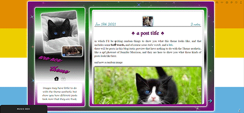
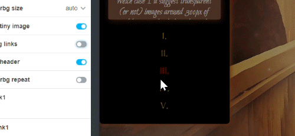
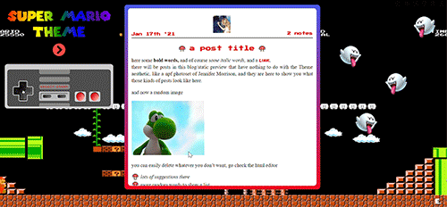
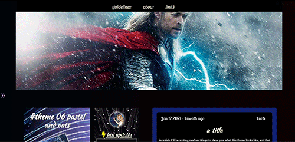
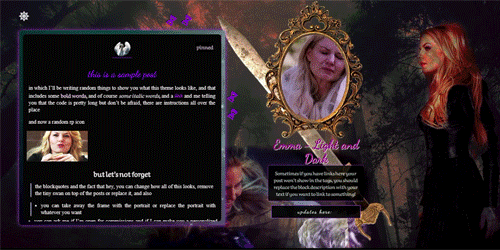
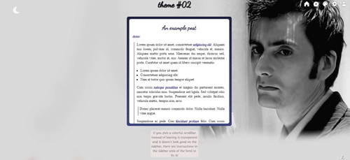

The following themes will look good on screens of every width, and give you the options to pick colors, most fonts and all images straight from the customization page, so they can be personalized by anyone regardless of their knowledge in coding - with the exception of the very first ones I made, here to showcase some gadgets... and for sentimental reasons.
1 / 10

one of my most famous themes, final fantasy inspired - as it says in the preview, your readers can go in dark or light mode with one click, there is a dropdown menu on one side, sidebars move on top on small screens, blending colors and backgrounds,
and good old fancy titles!
2 / 10

another example of how the previous theme can be customized!
3 / 10

lgbtqia+ theme, specifically dedicated to the aro-ace community! With playlist at the bottom and a background that changes every time you refresh the page
4 / 10

lotr theme! preview image from the customization page to show how you can pick if you want animated moving nazguls as your links or regular roman numbers, as well as picking the position and size of your banner image!
5 / 10

my Super Mario-inspired theme! naturally everything that moves is a link, but really, isn't saying 'super Mario' enough?
6 / 10

Optional banner, number of columns and so on, plus all updates and column text can be added directly from the customization page, no need to touch the code
7 / 10

Same theme as before, just a little example of how simply picking a few different options can start giving it a much more personalized, different look
8 / 10

a theme where I played with the dark-mode button so that on top of it, your reader can actually enjoy a second theme - also a little image of your choosing will separate your posts. The second theme I've ever made (and as such not responsive for
mobile).
9 / 10

another example of the previous theme, specifically of how it could be edited and customized by a Doctor Who fan.
10 / 10

last, ironically, my very first theme: also not responsive, but it has a very special place in my heart... and who doesn't like popup navigation menus and stars?
all of them are free and can also be found in my ko-fi page!